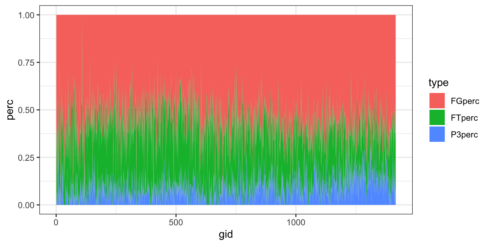

Chapter 20 NYT: LeBron James Achievement
這個案例的靈感來自於紐約時報於2023年2月7日所發布的一篇新聞「How LeBron James Outscored Kareem Abdul-Jabbar and All the N.B.A. Greats」。該篇新聞的破題點在於LeBron James 打破 Kareem Abdul-Jabbar 的紀錄，成為 NBA 歷史上得分王，這是許多人認為無法達成的成就。今年 38 歲的 James，本季平均每場比賽可以攻下 30.2 分，以 38,390 分超越了 Abdul-Jabbar 的 38,387 分。Abdul-Jabbar 以 sky hook 聞名，而 James 則透過多種得分方式積累分數，包括近年來在聯盟中日益盛行的三分球。James 的長壽、創意、天賦和能力讓他達成了這個成就。但實際上，這篇新聞同時也凸顯了 NBA 在過去50年的演變。
這篇新聞中運用了NBA球員與球賽資料庫中250名頂尖球員的資料來繪製視覺圖表，頂尖球員援引該網站的定義，為歷年的每場平均得分（PTS）。其用了折線圖、長條圖、散佈圖等多種視覺呈現方法，並採用了多項指標來凸顯LeBron James的成就，包含年齡、累積得分數、場均得分數、三分球與二分球的比例等。
除了資料視覺化外，這個案例也是相當好的爬蟲練習，可用R語言的rvest套件來爬取https://www.basketball-reference.com/網站的球員資料，包含每個球季的比分，甚至著名球員每場的得分和進球數等等。該網站的網頁多為具有id的HTML表格，相對來說爬取難度較低，但如果要仿照該篇新聞來製作視覺圖表，需要爬取多個頁面的資料，反而是訓練學生從篩檢資料到產生新聞的一個好範例。
20.1 Get top250 players
事實上我是知道有NBA球員比分網站的，看到這則新聞時我就去線上查找了相關的網站https://www.basketball-reference.com。而且該網站的球員資料是表格形式，代表我們可以用一些比較方便的函式（html_table()）直接將該表格的內容轉為data.frame。
但目前（2023/04/01）的球員數共有五千多人，我們不可能將所有的球員通通繪製在圖上，反而會影響我們看到重要的訊息，因此要有效且有意義地減少要視覺化的資料量。這有幾種策略，一種是根據目的取出想要比較的球員、一種是直接設一個閥值（例如職涯超過15年的約90人），一種是看看該資料網站上有沒有列出一些頂尖球員名單。（猜想）紐約時報用的是該網站上的Top 250，因此第一個步驟要做的就是先把要分析的這250名球員的名冊爬取下來，之後再逐一爬取每個球員的資料紀錄。
這段程式碼的目的是從網站 “https://www.basketball-reference.com” 中提取出排名前幾位的籃球員生涯表現數據，以及每個球員的個人資料頁面連結。Top 250球員的頁面網址為https://www.basketball-reference.com/leaders/per_career.html。
現在，我們可以使用rvest套件中的read_html()函數讀取網頁的 HTML 內容，該。接著傳遞給下一個函數html_node()，並指定要選取的 HTML 元素 ID 為nba。這個 ID 代表了包含球員表現數據的表格。最後，使用html_table() 函數提取表格資料並將結果存入top_players變數中。
read_html(url)函數是rvest套件中的一個函數，它可讀取指定網址的 HTML 內容，以轉換為R的物件。html_node()函數則可用於選擇 HTML 內容中的指定元素。指定元素的方法是使用XPath或CSS Selector，本範例採用的是CSS Selector。若所要選取的同類型元素大於一個，那就要使用html_nodes()，所取得的結果會存入一個由1開始編號的List。如果前一個步驟所指定的元素恰巧是一個表格的話，那我們就可以使用
html_table()直接將表格轉換為一個R的data.frame，但如果不是表格的話，就必須要搭配使用html_text()或html_attr()來取出指定元素中的所需內容。
做完html_table()後的dataframe存於top_players，該dataframe共有三個變項：Rk（Rank）、PER（每場平均得分）、Player（球員名）。但該dataframe中缺少球員資料頁面的連結，所以需要另外再爬取一次球員名中的連結。取得的方式還是那三個步驟
read_html()：取得該url的網頁內容並轉為R的物件。html_node()/html_nodes()：選取所需的HTML元素。此時我們要娶的是#nba這個表格中每一列<tr>的第二欄<td>中的超鏈結<a>。html_text()/html_attr()/html_table()：抽取所選取的HTML元素內容。此時要抽取的是<a>中的超鏈結，也就是<a>的href屬性（Attribute），所以要用html_attr("href")。
抽取出來的連結往往是相對於主要連結的後半段，因此，最後要將所取得的連結黏接在主頁連結的後方，如str_c(url.base, .)。
url.base <- "https://www.basketball-reference.com"
url <- "https://www.basketball-reference.com/leaders/per_career.html"
top_players <- read_html(url) %>%
html_node("#nba") %>%
html_table()
top_players$plink <- read_html(url) %>%
html_node("#nba") %>%
html_nodes("tr td:nth-child(2) a") %>%
html_attr("href") %>%
str_c(url.base, .)
top_players20.3 Scrape life time scores
# pinks <- long_players$plink
plinks <- top_players$plink
totals <- tibble()
for(i in 1:length(plinks)){
plink <- plinks[i]
message(sprintf("[%s] ", i), plink)
table <- read_html(plink) %>%
html_node("#totals") %>%
html_table()
table$plink <- plink
totals <- bind_rows(totals, table)
Sys.sleep(sample(1:2, 1))
}20.4 Cleaning data
top250 <- totals %>%
filter(str_detect(Season, "\\d{4}-\\d{2}")) %>%
left_join(top_players, by="plink") %>%
select(-(34:53)) %>%
select(-31) %>%
mutate(year = year(paste0(str_sub(Season, 1, 4), "-01-01"))) %>%
mutate(PERyear = PTS/G) %>%
group_by(plink) %>%
arrange(Age) %>%
mutate(cumPTS = cumsum(PTS)) %>%
ungroup()20.5 Visualization
load("data/nba_players.rda")20.5.1 Line: Age x cumPTS
library(gghighlight)
selected_players <- c("Michael Jordan*", "LeBron James", "Kobe Bryant*",
"Wilt Chamberlain*", "Kareem Abdul-Jabbar*", "Stephen Curry")
top250 %>%
ggplot() +
aes(Age, cumPTS, group=Player) +
geom_line() +
gghighlight(Player %in% selected_players) +
theme_bw() +
theme(legend.position = "none")20.5.2 Line: year x cumPTS
top250 %>%
ggplot() +
aes(year, cumPTS, group=Player) +
geom_line() +
gghighlight(Player %in% selected_players) +
theme_bw() +
theme(legend.position = "none")20.6 Scraping and cleaning
# plink <- "https://www.basketball-reference.com/players/j/jamesle01.html"
plink <- "https://www.basketball-reference.com/players/a/abdulka01.html"
loglinks <- read_html(plink) %>%
html_node("#totals") %>%
html_nodes("tr th a") %>%
html_attr("href") %>%
paste0(url.base, .)
logtable <- tibble()
for(link in loglinks){
table <- read_html(link) %>%
html_node("#pgl_basic") %>%
html_table()
logtable <- bind_rows(logtable, table)
message(nrow(logtable), link)
}
jabbar.log <- logtable %>%
select(Rk, G, Date, FG, `3P`, FT, PTS) %>%
mutate(Rk = as.numeric(Rk),
FG = as.numeric(FG),
`3P` = as.numeric(`3P`),
FT = as.numeric(FT),
PTS = as.numeric(PTS)) %>%
filter(!is.na(PTS)) %>%
replace(is.na(.), 0) %>%
mutate(try = FG + `3P` + FT) %>%
mutate(FGperc = FG/try,
P3perc = `3P`/try,
FTperc = FT/try) %>%
mutate(gid = row_number())20.6.1 VIS LJames and jabbar
james.log %>%
pivot_longer(names_to = "type",
cols = c("FGperc", "P3perc", "FTperc"),
values_to = "perc") %>%
ggplot() +
aes(gid, perc, fill = type) +
geom_area() +
theme_bw()
jabbar.log %>%
pivot_longer(names_to = "type",
cols = c("FGperc", "P3perc", "FTperc"),
values_to = "perc") %>%
ggplot() +
aes(gid, perc, fill = type) +
geom_area() +
theme_bw()
top250 %>%
group_by(Player) %>%
summarize(FGsum = sum(FG),
FTsum = sum(FT),
P3sum = sum(`3P`)) %>%
ungroup() %>%
replace(is.na(.), 0) %>%
mutate(trials = FGsum + FTsum + P3sum) %>%
mutate(FGperc = FGsum/trials,
FTperc = FTsum/trials,
P3perc = P3sum/trials) %>%
ggplot() +
aes(FGperc, P3perc) +
geom_point() +
geom_text(aes(label = Player), hjust = -0.1) +
gghighlight(Player %in% selected_players) +
theme_bw() +
theme(aspect.ratio = 2/3)save(jabbar.log, james.log, top_players, top250, totals,
file="../data/nba_players.rda")20.7 (More) Scraping all players
20.7.1 Testing
url <- "https://www.basketball-reference.com/players/x/"
table.path <- read_html(url) %>%
html_node("#players")
table <- table.path %>% html_table()
table$pid <- table.path %>%
html_nodes("tbody th") %>%
html_attr("data-append-csv")
table$plink <- table.path %>%
html_nodes("tbody th a") %>%
html_attr("href") %>%
str_c("https://www.basketball-reference.com",.)20.7.2 Scrape from a-z except x(no x)
# letters[c(1:23, 25:26)]
players <- tibble()
for(letter in letters[c(1:23, 25:26)]){
url <- str_c("https://www.basketball-reference.com/players/", letter, "/")
print(url)
table.path <- read_html(url) %>%
html_node("#players")
table <- table.path %>% html_table()
table$pid <- table.path %>%
html_nodes("tbody th") %>%
html_attr("data-append-csv")
table$plink <- table.path %>%
html_nodes("tbody th a") %>%
html_attr("href") %>%
str_c("https://www.basketball-reference.com",.)
players <- bind_rows(players, table)
}